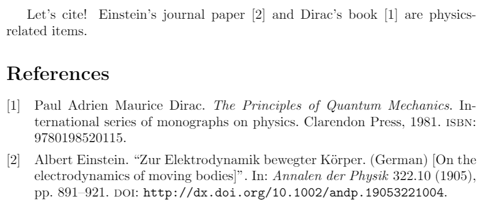
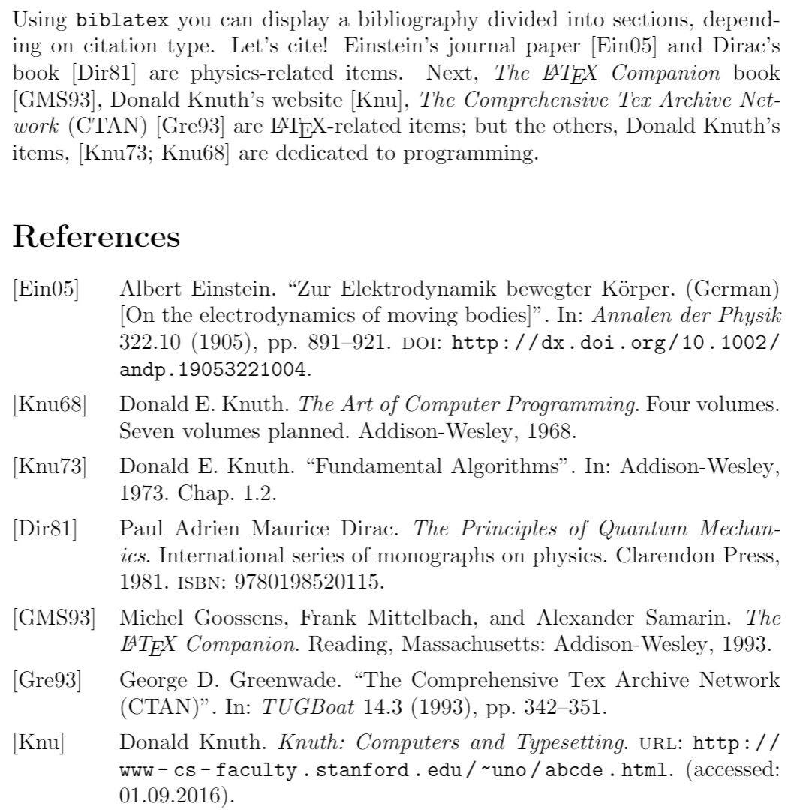
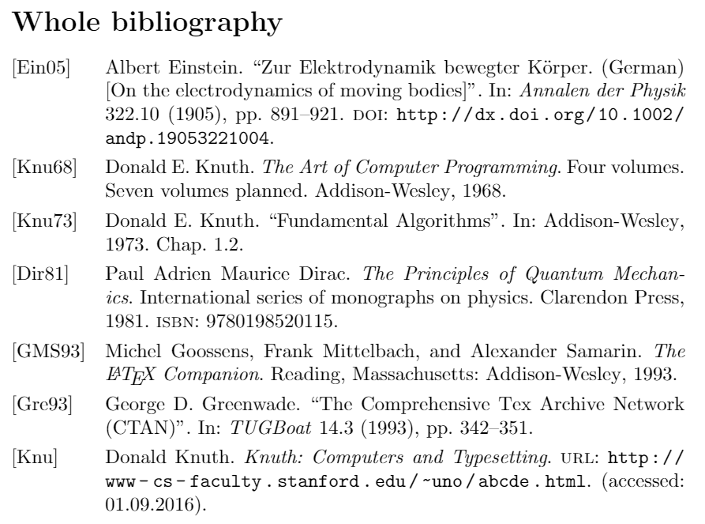
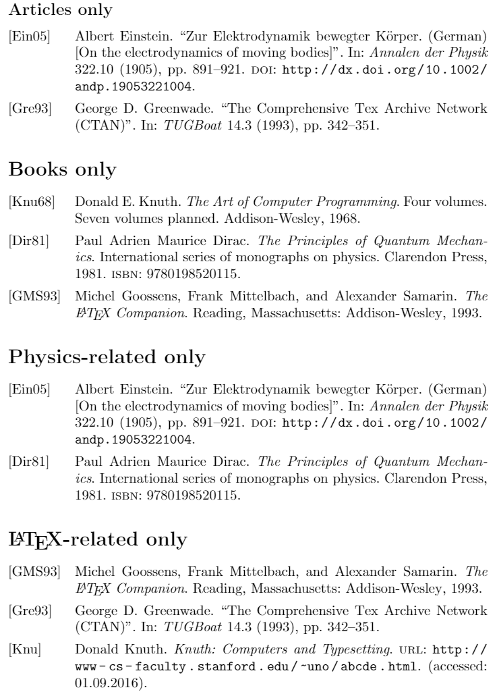
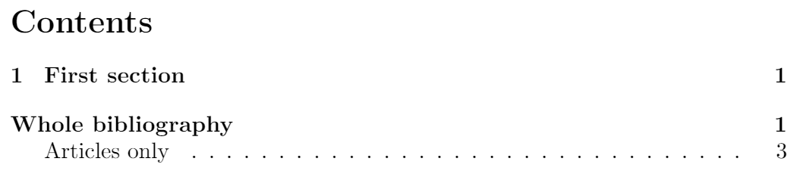

Bibliography management in LaTeX
Introduction
When it comes to bibliography-management packages, there are three main options in LaTeX: bibtex, natbib and biblatex.
This article explains how to use the biblatex package, to manage and format the bibliography in a LaTeX document. biblatex is a modern option for processing bibliography information, provides an easier and more flexible interface and a better language localization than the other two options.
A minimal working example of the biblatex package is shown below:
\documentclass[letterpaper,10pt]{article}
\usepackage{biblatex} %Imports biblatex package
\addbibresource{sample.bib} %Import the bibliography file
\begin{document}
Let's cite! Einstein's journal paper \cite{einstein} and Dirac's
book \cite{dirac} are physics-related items.
\printbibliography %Prints bibliography
\end{document}

There are four bibliography-related commands in this example:
\usepackage{biblatex}- Imports the package
biblatex.
\addbibresource{sample.bib}- Imports the bibliography data file
sample.bib: this file contains information about each referenced book, article, etc. See the bibliography file section for more information.
\cite{einstein}- This command inserts a reference within the document, [1] in this case, that corresponds to an element in the bibliography,
einsteinis a keyword corresponding to an entry insample.bib.
\printbibliography- Prints the list of cited references, the default title is
Referencesfor the article document class and "Bibliography" for books and reports.
Overleaf provides several templates with pre-defined styles to manage bibliographies. See this link. Open an example of the biblatex package in Overleaf
Basic usage
Several parameters can be passed to the package import command, as in the following example:
\documentclass{article}
\usepackage[
backend=biber,
style=alphabetic,
sorting=ynt
]{biblatex}
\addbibresource{sample.bib}
\title{Bibliography management: \texttt{biblatex} package}
\author{Overleaf}
\date{ }
\begin{document}
\maketitle
Using \texttt{biblatex} you can display a bibliography divided
into sections, depending on citation type. Let's cite! Einstein's
journal paper \cite{einstein} and Dirac's book \cite{dirac} are
physics-related items. Next, \textit{The \LaTeX\ Companion} book
\cite{latexcompanion}, Donald Knuth's website \cite{knuthwebsite},
\textit{The Comprehensive Tex Archive Network} (CTAN)
\cite{ctan} are \LaTeX-related items; but the others, Donald Knuth's items,
\cite{knuth-fa,knuth-acp} are dedicated to programming.
\medskip
\printbibliography
\end{document}

Some extra options, inside brackets and comma-separated, are added when importing biblatex:
backend=biber- Sets the backend to sort the bibliography,
biberis the default one and recommended since it provides full localization for several commands and the styles for biber are easier to modify because they use standard LaTeX macros. The other supported backend isbibtex, which is a more traditional program; if set as thebackend,bibtexwill only be used to sort the bibliography, so nobibtexstyles can be used here.
style=alphabetic- Defines the bibliography style and the citation style, in this case
alphabetic. Depending on the style, more citation commands might be available. See biblatex bibliography styles and citation styles for more information.
sorting=ynt- Determines the criteria to sort the bibliographic sources. In this case they are sorted by year, name and title. See the reference guide for a list of sorting options.
The rest of the commands were explained in the introduction.
Open a more complete biblatex example in Overleaf
The bibliography file
The bibliography files must have the standard bibtex syntax
@article{einstein,
author = "Albert Einstein",
title = "{Zur Elektrodynamik bewegter K{\"o}rper}. ({German})
[{On} the electrodynamics of moving bodies]",
journal = "Annalen der Physik",
volume = "322",
number = "10",
pages = "891--921",
year = "1905",
DOI = "http://dx.doi.org/10.1002/andp.19053221004",
keywords = "physics"
}
@book{dirac,
title = {The Principles of Quantum Mechanics},
author = {Paul Adrien Maurice Dirac},
isbn = {9780198520115},
series = {International series of monographs on physics},
year = {1981},
publisher = {Clarendon Press},
keywords = {physics}
}
@online{knuthwebsite,
author = "Donald Knuth",
title = "Knuth: Computers and Typesetting",
url = "http://www-cs-faculty.stanford.edu/~uno/abcde.html",
addendum = "(accessed: 01.09.2016)",
keywords = "latex,knuth"
}
@inbook{knuth-fa,
author = "Donald E. Knuth",
title = "Fundamental Algorithms",
publisher = "Addison-Wesley",
year = "1973",
chapter = "1.2",
keywords = "knuth,programming"
}
...
This file contains records in a special format; for instance, the first bibliographic reference is defined by:
@article{...}- This is the first line of a record entry,
@articletells BibTeX that the information stored here is about an article. The information about this entry is enclosed within braces. Besides the entry types shown in the example (article,book,onlineandinbook) there are a lot more, see the reference guide.
einstein- The label
einsteinis assigned to this entry, is a unique identifier that can be used to refer this article within the document.
author = "Albert Einstein",- This is the first field in the bibliography entry, indicates that the author of this article is Albert Einstein. Several comma-separated fields can be added using the same syntax
key = value, for instance: title, pages, year, URL, etc. See the reference guide for a list of possible fields.
The information in this file can later be printed and referenced within a LaTeX document, as shown in the previous sections, with the command \addbibresource{sample.bib}. Not all the information in the .bib file will be displayed, it depends on the bibliography style set in the document.
Open a more complete biblatex example in Overleaf
Customizing the bibliography
Biblatex allows high customization of the bibliography section with little effort. It was mentioned that several citation styles and bibliography styles are available, and you can also create new ones. Another customization option is to change the default title of the bibliography section.
\documentclass{article}
\usepackage[
backend=biber,
style=alphabetic,
sorting=ynt
]{biblatex}
\addbibresource{sample.bib}
\title{Bibliography management: \texttt{biblatex} package}
\author{Overleaf}
\date{May 2021}
\begin{document}
\maketitle
Using \texttt{biblatex} you can display a bibliography divided into sections,
depending on citation type. Let's cite! Einstein's journal paper \cite{einstein}
and Dirac's book \cite{dirac} are physics-related items. Next, \textit{The \LaTeX\ Companion}
book \cite{latexcompanion}, Donald Knuth's website \cite{knuthwebsite},
\textit{The Comprehensive Tex Archive Network} (CTAN) \cite{ctan} are
\LaTeX-related items; but the others, Donald Knuth's items,
\cite{knuth-fa,knuth-acp} are dedicated to programming.
\medskip
\printbibliography[title={Whole bibliography}]

The additional parameter title={Whole bibliography} passed inside brackets to the command \printbibliography is the one that changes the title.
The bibliography can also be subdivided into sections based on different filters, for instance: print only references from the same author, the same journal or similar title. Below an example.
\printbibliography[type=article,title={Articles only}]
\printbibliography[type=book,title={Books only}]
\printbibliography[keyword={physics},title={Physics-related only}]
\printbibliography[keyword={latex},title={\LaTeX-related only}]

Here, the bibliography is divided in 4 sections. The syntax of the commands used here is explained below:
\printbibliography[type=article,title={Articles only}]- Only prints entries whose type is "article", and sets the title "Articles only" for this section. The same syntax works for any other entry type.
\printbibliography[keyword={physics},title={Physics-related only}]- Filters bibliography entries that include the word "physics" in any of the fields. Sets the title "Physics-related only" for said section.
Open a more complete biblatex example in Overleaf
Adding the bibliography in the table of contents
For the bibliography the be printed in the table of contents an extra option must be passed to \printbibliography
\printbibliography[
heading=bibintoc,
title={Whole bibliography}
]
\printbibliography[heading=subbibintoc,type=article,title={Articles only}]

A section and a subsection are added to the table of contents:
- In the first case, adding
heading=bibintocadds the title to the table of contents as an unnumbered chapter if possible or as an unnumbered section otherwise.
- The second case is
heading=subbibintocthat adds the title as a second level entry in the table of contents, in this example as a subsection nested in "Whole bibliography".
Open a more complete biblatex example in Overleaf
Reference guide
Supported entry types
| article | book | mvbook |
| inbook | bookinbook | suppbook |
| booklet | collection | mvcollection |
| incollection | suppcollection | manual |
| misc | online | patent |
| periodical | suppperiodical | proceedings |
| mvproceedings | inproceedings | reference |
| mvreference | inreference | report |
| set | thesis | unpublished |
| custom | conference | electronic |
| masterthesis | phdthesis | techreport |
Supported entry fields (The printed information depends on the bibliography style)
| abstract | addendum | afterword | annotate |
| author | authortype | bookauthor | bookpagination |
| booksubtitle | booktitle | chapter | commentator |
| date | doi | edition | editor |
| editortype | eid | entrysubtype | eprint |
| eprinttype | eprintclass | eventdate | eventtitle |
| file | foreword | holder | howpublished |
| indextitle | institution | introduction | isan |
| isbn | ismn | isrn | issue |
| issuesubtitle | issuetitle | iswc | journalsubtitle |
| journaltitle | label | language | library |
| location | mainsubtitle | maintitle | month |
| note | number | organization | origdate |
| origlanguage | origlocation | origpublisher | origtitle |
| pages | pagetotal | pagination | part |
| publisher | pubstate | reprinttitle | series |
| shortauthor | shortedition | shorthand | shorthandintro |
| shortjournal | shortseries | shorttitle | subtitle |
| title | translator | type | url |
| venue | version | volume | year |
Bibliography sorting options
| option | description |
|---|---|
nty |
sort by name, title, year |
nyt |
sort by name, year, title |
nyvt |
sort by name, year, volume, title |
anyt |
sort by alphabetic label, name, year, title |
anyvt |
sort by alphabetic label, name, year, volume, title |
ydnt |
sort by year (descending), name, title |
none |
entries are processed in citation order |
For detailed information on these entries and options, see the package documentation.
Further reading
For more information see
- Biblatex bibliography styles
- Biblatex citation styles
- Bibliography management with natbib
- Bibliography management with bibtex
- Creating and Managing Bibliographies with BibTeX on Overleaf
- Biblatex package documentation
- International language support
- Table of contents
- Management in a large project
- Multi-file LaTeX projects
Overleaf guides
- Creating a document in Overleaf
- Uploading a project
- Copying a project
- Creating a project from a template
- Using the Overleaf project menu
- Including images in Overleaf
- Exporting your work from Overleaf
- Working offline in Overleaf
- Using Track Changes in Overleaf
- Using bibliographies in Overleaf
- Sharing your work with others
- Using the History feature
- Debugging Compilation timeout errors
- How-to guides
- Guide to Overleaf’s premium features
LaTeX Basics
- Creating your first LaTeX document
- Choosing a LaTeX Compiler
- Paragraphs and new lines
- Bold, italics and underlining
- Lists
- Errors
Mathematics
- Mathematical expressions
- Subscripts and superscripts
- Brackets and Parentheses
- Matrices
- Fractions and Binomials
- Aligning equations
- Operators
- Spacing in math mode
- Integrals, sums and limits
- Display style in math mode
- List of Greek letters and math symbols
- Mathematical fonts
- Using the Symbol Palette in Overleaf
Figures and tables
- Inserting Images
- Tables
- Positioning Images and Tables
- Lists of Tables and Figures
- Drawing Diagrams Directly in LaTeX
- TikZ package
References and Citations
- Bibliography management with bibtex
- Bibliography management with natbib
- Bibliography management with biblatex
- Bibtex bibliography styles
- Natbib bibliography styles
- Natbib citation styles
- Biblatex bibliography styles
- Biblatex citation styles
Languages
- Multilingual typesetting on Overleaf using polyglossia and fontspec
- Multilingual typesetting on Overleaf using babel and fontspec
- International language support
- Quotations and quotation marks
- Arabic
- Chinese
- French
- German
- Greek
- Italian
- Japanese
- Korean
- Portuguese
- Russian
- Spanish
Document structure
- Sections and chapters
- Table of contents
- Cross referencing sections, equations and floats
- Indices
- Glossaries
- Nomenclatures
- Management in a large project
- Multi-file LaTeX projects
- Hyperlinks
Formatting
- Lengths in LaTeX
- Headers and footers
- Page numbering
- Paragraph formatting
- Line breaks and blank spaces
- Text alignment
- Page size and margins
- Single sided and double sided documents
- Multiple columns
- Counters
- Code listing
- Code Highlighting with minted
- Using colours in LaTeX
- Footnotes
- Margin notes
Fonts
Presentations
Commands
Field specific
- Theorems and proofs
- Chemistry formulae
- Feynman diagrams
- Molecular orbital diagrams
- Chess notation
- Knitting patterns
- CircuiTikz package
- Pgfplots package
- Typesetting exams in LaTeX
- Knitr
- Attribute Value Matrices
Class files
- Understanding packages and class files
- List of packages and class files
- Writing your own package
- Writing your own class